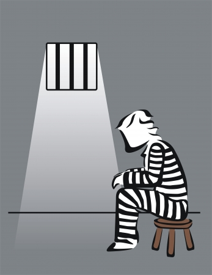

Autor: Daniela Dichi G. @danieladichi
A Jonatan le apasiona el fútbol, su sueño es ser jugador. Es Chiva de corazón, su cuarto está repleto de posters del equipo. Sus jugadores favoritos son Javier Hernandez “El Chicharito” y Marco Fabian. Jonatan está seguro que tiene todas las habilidades necesarias para ser un profesional, él sabe que si le echa ganas va a llegar lejos. “Me paso horas dominando la pelota, y todo el tiempo juego retas en el terreno baldío de mi barrio”.
Toda la familia de Jonatan se junta para ver los partidos en casa de sus abuelos maternos, comen papitas y se encomiendan a San Juditas para que ayude a los jugadores. “¡Pásala, pásala… Aquí! ¡Nooo, para el otro lado! ¡Si! ¡Goooool!”.
Desde que Jonatan nació su papá desapareció, pero Carmen, su mamá, ha sabido cuidar muy bien de él con ayuda de su abuelo. Jonantan es un niño muy querido y bien educado. Cuando cumplió 8 años, Carmen conoció a Carlos, quien se convirtió en su pareja y posteriormente se fueron a vivir con él. Un año después, Jonatan tuvo dos hermanos gemelos. Pasó de ser hijo único a hermano mayor, y eso lo emocionaba mucho.
Cuando Jonatan entró a primero de secundaria su vida dio un giro. Él y sus amigos se iban de pinta muy seguido, la verdad es que odiaban la escuela. Un día en la esquina de su casa, sacaron un churro de mota, y esa fue la primera vez que Jonatan probó la marihuana. “Los compas me iniciaron en la droga”, cuenta.
El mejor amigo de Jonatan se llama Jesús y un día vinieron por él en una “troca bien chida“. Ambos se dejaron de ver un tiempo y cuando Jesus regresó le dijo a Jonatan que fuera con él y sus amigos la próxima vez que los necesiten. “Mira Jona, si vienes conmigo puedes hacer mucha lana, comprarte una troca bien chula y tener muchas mujeres“.
Las personas que se encuentran en el periodo de la adolescencia y de la adultez joven, son parte de un grupo altamente asociado con la violencia y el delito en México, ya sea como víctimas o perpetradores. De acuerdo con el INEGI, del 2011 al 2014 la mayor parte de los delitos fueron cometidos por menores de 25 años; en el 2015 esto cambia dejando a este nicho en segundo lugar hasta la fecha.
Jonatan pensaba mucho en el fútbol. Él sabía que tenía que seguir entrenando, pero lo bueno es que solo necesitaba un balón. Además con dinero él podría comprar a cualquier visor y calificar en algún equipo. La marihuana ya era una adicción en esos momentos y para eso también necesitaba lana rapida.
Después de pensarlo unos días, Jonatan se escapó de su casa y decidió irse con Jesus, y se vieron en la esquina del Soriana con sus maletas. Él pensaba que si regresaba en unos días con dinero su mamá lo iba a perdonar.
Al hablar de adolescentes en conflicto con la ley, se hace referencia a las personas entre doce y diecisiete años que han cometido delitos. En el 2018 había 6,144 adolescentes en conflicto con la ley, de los cuales 1512 cumplen o cumplían una medida privativa, cifras que han disminuido por la entrada en vigor de la Ley Nacional del Sistema Integral de Justicia Penal para Adolescentes. Aunque las cifras presentadas por el gobierno mediante solicitudes de información han disminuido de manera muy considerable, el crimen en esta población no. Es decir hay tutelares vacíos pero la calle está repleta de niños y niñas cometiendo delitos.
La historia comienza en el 2013, Jonatan y Jesus subieron a un camioneta acompañados de otros 12 chicos del barrio, a esos ya los conocía, pero en total eran 60. Llegaron a la sierra y subieron, todos aplicaron para ser sicarios, porque es el puesto en el que más dinero se gana. “Dudé en elegir entre halcón, central o retenes, pero en esos tiempos ellos ganaban muy mal y no me gustaban sus funciones. Los Halcones traen el radio y están en las esquinas viendo si viene alguien para dar el pitazo; los centrales son administrativos y lo retenes son lo que frenan a la gente en las carreteras para ver quienes son y así”.
Al llegar a la sierra, todos empezaron con el adiestramientos. De entrada les dieron a todos un arma de fuego, además los entrenaba un kaibil, es decir, un exmilitar del ejército guatemalteco que se sumó al crimen organizado. Les enseñaron a usar armas y acerca de la supervivencia. El entrenamiento psicológico consistía en escuchar las historias de los superiores con más experiencia. Hacía mucho frío y no les daban ni una cobija, pero eso sí, comida y droga no faltaba. Jonatan pasó de la marihuana a la cocaína.
Carmen y Carlos procuraron enseñarle los mejores valores a Jonatan, le pedían que fuera humilde y que no se sintiera más que los demás, pero en cuanto el entrenamiento terminó, toda su educación familiar quedó en el olvido. Después lo único que buscaba era poder.
“Ahora pienso que por lo menos mi cártel tiene ciertos códigos porque hay otros que eso respetan, por ejemplo, a la familia no se le toca, matar gente inocente tampoco, eso nunca”, dijo Jonatan
Bajando de la sierra le dieron su primera paga a Jonatan, y lo primero que hizo fue ir a ver a su mama y dejarselo en cajón porque sabía que no lo iba a aceptar de lo enojada que estaba. Después, se volvió a ir, porque con la primera paga viene la primera chamba: “No se me olvida, fue una chava, trabajaba con los contras, primero la dejé en el cerro y luego la maté”, cuenta Jonatan
Pasaban los días y Jonatan no podía dormir de la culpa que sentía por su primer homicidio. “Encontré mucha motivación para seguir en esto al ver como otros chavos (como yo) iban subiendo de puesto y cada vez tenían más poder, armas y dinero. Desde que era chico me gustaba ver las series de narcos y como los jefes traían sus trocas y viejotototas... Sentía que todo estaba bien fácil, que el dinero llegaba muy rápido, pero me empecé a dar cuenta de que en esas series nada más te cuentan lo bonitos...nadie te dice que vas a extrañar a tu familia, lo que sentirás después de matar a alguien y lo que vivirás en la cárcel”. Comentó Jonatan.
La droga y las mujeres ayudaban a olvidar todos los males. Jonatan encontró la manera de delegar sus trabajos a otros para no sentir tanta culpa, y así fue como cada vez subía más de puesto. También empezó a reclutar chavitos para entrenarlos. Cuando cumplió 15 años, Jonatan tenía 10 personas a su cargo, era su equipo. Se dedicaban a cumplir órdenes de los de arriba. Secuestraban, robaban o incluso mataban. Por otro lado, al ser el jefe de su banda, le tocaba negociar con la policía, para que no los detenga y les dieran armas y balas.
Dos años estuvo de comandante, y Jonatan aprovechaba su poder para no hacer el trabajo sucio. “Un día, tenía dos chavos secuestrados en la casa de seguridad y me agarraron con las manos en la masa, ahora sí ya venían por mí los policías. Esta vez, por más que lo intente solucionar de otros modos, ya no se pudo y me llevaron al centro de internamiento. Menos mal que todavía tenían diecisiete años, porque unos meses mas y me voy pa la grande y ya no la cuento”.
Para entender cómo funciona la ley cuando hablamos de adolescente en conflicto con la ley hay que analizar los aspectos jurídicos, comenzando con esta categorización que determina la imposición de medidas cautelares:
Lo anterior puede funcionar como una ventaja para la delincuencia organizada porque los adolescentes son utilizados para cometer los delitos de los adultos. El objetivo es encontrar la estrategia adecuada para disminuir la comisión de delitos, no que las penas sean más fuertes.
En 2005 se reformó el artículo 18 constitucional y se creó el Sistema Integral de Justicia Penal para Adolescentes, dejando atrás la noción de tutelar y correccional, para poner en el centro a la persona adolescente como sujeto de derechos, autónomos y capaz de entender la ilicitud de sus actos, pero considerando en todo momento su condición de persona en desarrollo, lo que justifica un trato diferenciado respecto a los adultos y un especial sentido de protección. Esta ley se modifica en 2016.
El 16 de junio del 2016 entró en vigor la Ley Nacional del Sistema Integral de Justicia para adolescentes, con ella se implementaron una serie de modificaciones en la configuración de la población dentro de los centro de internamiento para adolescentes. Esta procura la impartición de justicia en la población, todos los procesos, el personal y las instalaciones deben ser adecuadas para la atención de las necesidades de los hombres y mujeres adolescentes en conflicto con la ley. Por otro lado para una reinserción exitosa, se evidencia la necesidad del involucramiento de las familia y el contexto social. Por último los juzgadores deben analizar cuidadosamente el contexto del adolescente para así poder dar un veredicto que guíe su reinserción dentro o fuera de un centro tutelar.
El principal objetivo de esta ley es que los adolescentes tengan una reinserción efectiva, evitando que vuelvan a reincidir. También establece que las medidas de internamiento deberán ser por el menor tiempo posible y como opción solo cuando se trata de los siguientes delitos: secuestro, trata de personas, terrorismo, extorsión, delitos contra la salud, portación de armas, homicidio, lesiones dolosas, violación y robo con violencia.
(Saskia, N. D., Castañeda, M., Dorantes, F., Palomar, L. M., & Ramos, C, 2020)Informacion obtenida de solicitudes informacion elaboradas a la plataforma nacional de transparencia
De acuerdo con Saskia Niño de Rivera, especialista en reinserción social, criminología y política criminal, “con la nueva ley, hay la misma cantidad de detenciones pero hay menos puestos a disposición. Ya es más complicado vincular a proceso a un adolescente. La corrupción de la misma policía de investigación, no quiere gastar tiempo en procesar al adolescente porque toma más tiempo, entonces prefieren soltarlo e irse con los adultos que es mucho más fácil vincularlos a proceso”. Por otro lado la especialista comentó que se le dan bonos a los policías de investigación, esto dependiendo de la cantidad de gente que se vincula a proceso.
Además los delitos que vienen estipulados en la ley se redujeron y eso hace que muchos más adolescentes estén en medidas de externamiento y no de internamiento. El problema viene cuando se implementa la ley y esta tiene muchas lagunas, porque la ley no está bien hecha y se junta con la corrupción y la impunidad de la policía investigadora.
Informacion obtenida de solicitudes informacion elaboradas a la plataforma nacional de transparencia
En el gráfico superior se puede notar la disminución de ingresos de adolescentes a centros tutelares desde que la ley entró en vigor. Como se mencionó esto no quiere decir que los adolescentes estén cometiendo menos crímenes, sino todo lo contrario. Sin embargo, mientras los centros tutelares se vacían en algunos estados los presupuestos ejecutados para mantenerlos aumentan.
Informacion obtenida de solicitudes informacion elaboradas a la plataforma nacional de transparencia
Los primeros dos años de internamiento de Jonatan fueron casi lo mismo que estar afuera. Logró negociar con los policías para que lo dejaran operar desde adentro libremente. Siguió trabajando con su cártel, hasta que un día organizó un motín con todos los presos y lo cambiaron de penal. En el nuevo centro no pudo seguir trabajando, y se sentía más en paz, esto logró que reflexionara y decidiera salirse.
Reinserta es una organización sin fines de lucro que tiene el propósito de prevenir el delito y reducir la inseguridad en México a través de su sistema penitenciario. Trabajan con dos modelos, uno de ellos siendo Adolescentes y Jóvenes en conflicto con la Ley. Esta organización promueve la importancia que tiene trabajar con ellos para la prevención del delito y para que ellos puedan convertirse en miembros productivos de la sociedad. Es así como Reinserta creó un modelo en el 2015 para trabajar con adolescentes dentro de centros de internamiento, como también las y los que han cumplido su medida de internamiento. Este modelo consiste en proporcionar a los y las participantes las herramientas necesarias para construir una vida alejada del delito y un rol productivo dentro de sus propias comunidades.
De acuerdo con Reinserta para generar planes de ejecución individualizados y eficientes hay dos puntos relevantes a tomar en cuenta: saberse riesgos y necesidades de la población. Los factores de riesgo con las características o circunstancias de una persona, de su familia, de su ambiente escolar o comunidad que hacen más probable su comportamiento delictivo, mientras que los factores protectores son aquellas características que lo hacen menos probable. También se hace una distinción entre factores de riesgo estáticos y dinámicos. Los estáticos con aquellos que no son susceptibles al cambio, como, por ejemplo, el historial de conducta antisocial. Mientras que los factores de riesgo dinámicos que sí pueden cambiar, y si se logra, la conducta delictiva puede reducirse.
No existe una causa única que explique la delincuencia, pero los estudios sobre factores de riesgo y protección han permitido comprobar que la presencia de diversos factores de riesgo incrementa la probabilidad de que un joven cometa un delito. Mientras que ciertos factores protectores pueden actuar para contrarrestar el efecto de los factores de riesgo.
El modelo RNR (risk need responsivity model) de Andrew Bonta nos permite reconocer los principales factores de riesgo asociados a la conducta criminal:
Jonatan es uno de los más de 30,000 niños involucrados en el crimen organizado. A pesar de que contaba con varios factores protectores como no violencia familiar, una buena relación con la pareja de su mamá, nadie de su familia consumía sustancias, apoyo y atención por parte de su madre, talento para un actividad deportiva, entre otros.
Sin embargo, contaba con tres factores de riesgo que tiraron a los protectores; estaba rodeado de asociaciones delictivas, desde los doce años se rodeó de gente mayor que el que consumían algún tipo de sustancias y eran delincuentes. El segundo factor es el del pensamiento antisocial, desde pequeño admiraba a los narcotraficantes y tenía un especial gusto en las narcoseries, a los doce años creyó haberse unido a lo que sería su sueño; coches, mujeres, drogas y dinero. Por último, el tercer factor es el abuso de sustancias ilícitas, deja la escuela y desde muy chico comienza a consumir, a su edad su cerebro sigue en un etapa de maduración, así que las drogas le afectan mucho más que un adulto.
A lo largo del discurso de Jonatan, se pueden observar emociones de arrepentimiento, culpa y ganas de salir adelante. Tiene muchas herramientas las cuales se tienen que canalizar para que pueda salir adelante y no vuelva a reincidir. Admira el poder, le gusta la buena vida y sabe manejar a un equipo. Se busca que pueda utilizar su liderazgo de forma positiva. Además debe cortar todo tipo de amistades negativas.
A Jonatan le dieron cinco años de condena. Desde que cumplió tres años encerrado decidió comenzar un proceso de reinserción social positivo. “Creo que lo hecho nunca se va a borrar, pero ahora considero que todos podemos cambiar y llevar una vida buena”.
Reinserta Un Mexicano, A.C. (2018). Estudio de factores de riesgo y victimización en adolescentes que cometieron delitos de alto impacto social. Recuperado del ditio de Internet de Reinserta un Mexicano A.C: https://reinserta.org/
Saskia, N. D., Castañeda, M., Dorantes, F., Palomar, L. M., & Ramos, C. (2020). Un sicario en cada hijo te dio: Niñas, niños y adolescentes en la delincuencia organizada. Ciudad de México: Aguilar.